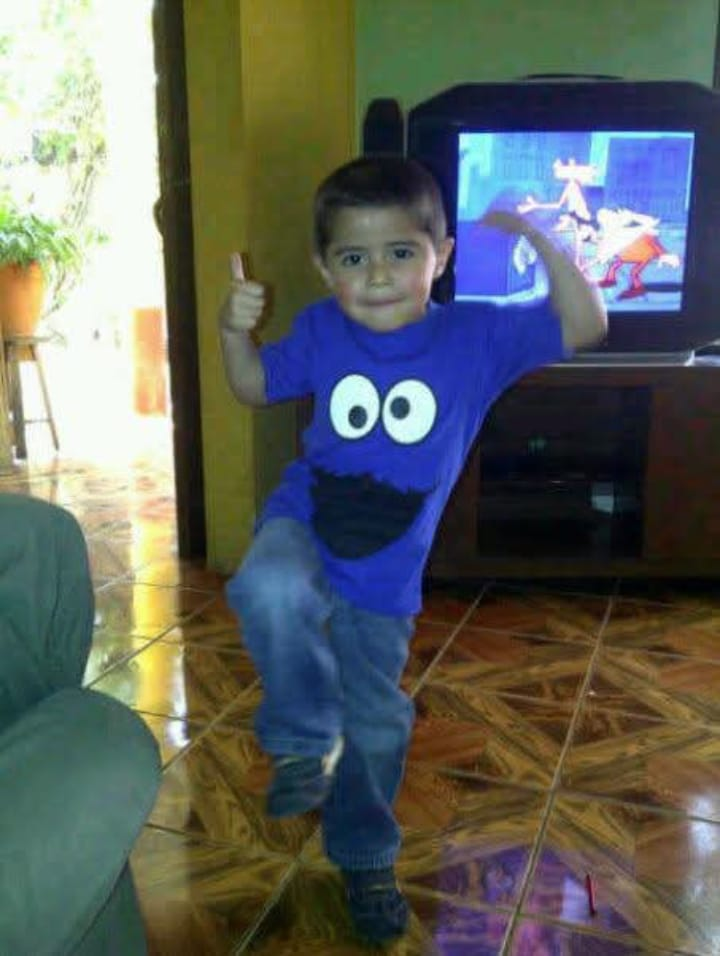

Lo que siento
por ti

Mi yo de chiquitoA veces paso horas tratando de buscar las palabras exactas para explicarte todo lo que causas en mí, pero me doy cuenta de que cualquier lenguaje se queda corto. Todo lo que te digo a diario, todos los mensajes de buenos días, y hasta este pequeño detalle que preparé para ti, son solamente la punta del iceberg.
Debajo de la superficie que alcanzas a ver, hay un océano inmenso de sentimientos que nacen por ti todos los días. Es un amor tan grande que a veces siento que no me cabe en el pecho, una cantidad de emociones que me desbordan y que me demuestran que lo que tenemos es único.
No solamente te amo yo, también te ama mi yo de pequeño.
Quiero confesarte algo muy íntimo que he descubierto desde que estás en mi vida: no solamente te amo yo, el adulto que intenta entender el mundo y hacer las cosas bien; también te ama mi yo de pequeño.
Dicen que cuando nos enamoramos de verdad y nos sentimos completamente seguros, nuestro niño interior despierta porque por fin encuentra un lugar donde no tiene que esconderse.
Ese niño que vive en mí te ama profundamente, porque a tu lado siente una paz y una alegría que hace mucho tiempo no experimentaba.
Por eso, cada vez que te digo algo bonito de la nada, cada vez que bromeo contigo, te molesto un poquito o intento sacarte una sonrisa con mis ocurrencias, no soy solo yo... es mi yo de chiquito saltando de emoción. Es él demostrándote que confía en ti ciegamente.
Para mí, jugar contigo y hacerte reír es la forma más pura y sincera que tengo de decirte que me haces inmensamente feliz y que a tu lado puedo ser yo mismo, sin filtros y sin barreras.
No te imaginas la forma en que llegaste a mi vida a cambiarlo todo para bien. Te lo digo con el corazón en la mano: eres lo mejor que me ha pasado en muchísimo tiempo.
Antes de ti, las cosas se sentían rutinarias, pero tú llegaste a encender luces en partes de mi alma que ni siquiera sabía que estaban apagadas.
Me devolviste la ilusión, la emoción de despertar cada mañana con ganas de saber de ti, y el deseo de entregarme por completo a alguien que de verdad vale la pena.
Y te soy totalmente sincero, sentir tanta felicidad de golpe también me asusta a veces. Me da un miedo gigante llegar a perderte alguna vez, porque cuando encuentras a una persona que hace que tu mundo entero cobre sentido, la simple idea de no tenerla se vuelve impensable.
Mi corazón, de verdad, late a otro ritmo por ti, se muere por ti y te busca en cada pequeño detalle de mi día. Es un miedo que nace del amor tan profundo que te tengo y de lo indispensable que te has vuelto para mí.
Sé perfectamente que no soy perfecto y que estoy lejos de serlo. Tengo mis propios problemas, mis inseguridades, mis miedos y esos procesos internos con los que lucho a diario.
A veces me equivoco, a veces no sé cómo reaccionar o mi mente me juega malas pasadas.
Pero quiero que sepas que estoy muy consciente de todo eso y que, más que nunca, tengo la voluntad de trabajar en mí. No quiero que mis miedos sean un obstáculo para lo nuestro.
Mi mayor motivación para ser mejor eres tú. Espero de verdad, y me esfuerzo todos los días, para superar todas mis barreras y convertirme en el hombre que amas y del que te sientas profundamente orgullosa.
Quiero ser ese compañero que esté a tu altura, que sepa cuidarte, entenderte y ser tu refugio cuando el mundo afuera sea difícil.
Quiero que encuentres en mí la misma paz y el mismo amor incondicional que tú me das a mí sin pedir nada a cambio.
Sé que a veces puedes llegar a pensar que soy algo intenso, y tal vez tengas razón. Pero es que cuando se trata de ti, no sé querer a medias.
Mi amor por ti es tan inmenso que necesito expresarlo, necesito que sepas en todo momento lo importante que eres para mí. No quiero guardarme nada, no quiero jugar a hacerme el desinteresado.
Prefiero mil veces pecar de intenso que dejar pasar un solo día sin recordarte lo preciosa, valiosa e increíble que eres ante mis ojos.
Esa intensidad viene de una certeza absoluta que se instaló en mi pecho: siento que contigo todo es posible en este mundo.
No me importan las complicaciones o lo que tengamos que enfrentar; a tu lado siento una fuerza que no conocía. Me haces sentir que somos un equipo invencible y que, mientras nos mantengamos unidos, no hay reto que no podamos superar.
Me das la valentía para creer en los finales felices.
Sé que no siempre es fácil. La distancia a veces duele, y te juro que me frustra no poder simplemente cruzar la calle para darte un abrazo cuando más lo necesitas.
Pero cada kilómetro que nos separa físicamente, solo me confirma que lo nuestro vale la pena.
No me importa el espacio que haya entre nosotros, porque te siento más cerca de mi alma que a cualquier otra persona que haya conocido.
He aprendido a quererte a través de una pantalla, a descifrar tus silencios y a enviarte todo mi calor en mensajes de texto.
Y aunque me muero de ganas por el día en que por fin pueda sostener tu mano de verdad y mirarte frente a frente, estoy dispuesto a ser paciente.
Porque esperarte a ti y construir esto día a día, es el acto de amor más hermoso y seguro que he hecho en mi vida.
Contigo va a ser muy, pero muy diferente.
Mi instinto y mi corazón me lo dicen a gritos todos los días. Esto no es algo pasajero, no es solo un momento de emoción.
Es una conexión tan profunda y tan real que me hace querer cuidarla con mi vida entera.
Siento que nuestras almas se reconocieron y que esta historia que estamos escribiendo juntos tiene un propósito inmenso.
Tengo tantas ilusiones contigo que podría llenar libros enteros contándotelas. Sueño con tantas cosas que quiero experimentar a tu lado.
Desde las cosas más simples y cotidianas, como compartir un silencio tranquilo o escucharte quejarte de tu día, hasta los planes más grandes.
Cada plan a futuro en mi mente tiene tu nombre y tu sonrisa.
Por todo esto te preparé esta pequeña cartita, este rincón digital hecho con todo mi amor. Necesito que sepas que cada palabra que lees aquí es completamente cierta; sale de un corazón que suele reprimirse a diario, y la única forma que tiene de desahogarse y liberarse, es escribiendo.
Escribiendo para que no se olvide de que siente, de que todos los días puede amar, puede llorar, puede enojarse...
Escribiendo para recordarse a sí mismo que está vivo, que es vulnerable, y que todo ese huracán de emociones existe porque tú lo despertaste.
A veces me pregunto cómo lograste entrar tan profundo. Cómo hiciste para que este corazón, que por tanto tiempo estuvo a la defensiva, de pronto quisiera entregarse por completo.
Eres mi lugar seguro, el único sitio en el mundo donde no necesito fingir que soy fuerte todo el tiempo.
Contigo puedo ser vulnerable y sé que mi corazón, con todos sus miedos, está a salvo en tus manos.
Te elijo hoy y te voy a elegir mañana.
Te elijo en tus días buenos, donde todo es risas, pero te elijo todavía más en tus días difíciles, cuando te sientes estresada, agotada o abrumada.
No estoy aquí solo para los momentos fáciles; estoy aquí para sostenerte, escucharte y acompañarte cuando sientas que el mundo pesa demasiado.
A veces me concentro tanto en tratar de explicarte lo que me haces sentir, que olvido decirte lo muchísimo que admiro quién eres.
Admiro tu fuerza, tu forma de enfrentar el mundo y tu resiliencia, incluso en esos días grises en los que sientes que el estrés te gana pero aún así sigues adelante.
Eres una mujer increíble, no solo por la forma tan bonita en la que me tratas, sino por tu esencia. Me enamoro de tu mente, de tu valentía y de esa luz que irradias incluso cuando tú misma no logras verla.
Quiero que sepas que estoy dispuesto a aprender de ti y a conocerte todos los días un poco más.
A entender tus límites, a leer tus silencios, a saber distinguir cuándo necesitas que te haga reír con mis tonterías y cuándo simplemente necesitas que sea tu ancla, que te escuche y te dé paz.
Entiendo que el amor maduro también se trata de aprender a hablar el idioma del otro, de saber cuidarse mutuamente, y te prometo que yo estoy aquí para aprender todo de ti.
Cuando la distancia pesa, cierro los ojos y me imagino el día en que por fin ya no haya pantallas de por medio.
El día en que despierte a tu lado, pueda abrazarte por la espalda y decirte al oído todo esto que hoy tengo que teclear a la distancia. Sé que ese día va a llegar.
Cada noche que pasa es un día menos para que nuestras vidas se crucen en persona, y te prometo, con el corazón en la mano, que toda esta espera y toda esta paciencia van a valer cada segundo.
Quisiera escribir muchas cosas más aquí, llenar todo este libro hasta que la página se caiga... pero me guardo algo para el futuro.
Tengo la inmensa ilusión de que, cuando por fin estemos más juntos que nunca y la distancia ya no exista, podré darte un libro real.
Un libro físico que puedas sostener en tus manos, donde cada hoja, cada palabra y cada letra explique todo lo que siento por ti, mientras te veo leerlo estando a mi lado.
Hace poco me encontré con una carta de amor que escribió Ludwig van Beethoven, y al leerla, sentí que me había robado las palabras del pensamiento. Él logró describir exactamente lo que tú me haces sentir. Dice así:
«Mi corazón está lleno de tantas cosas que decirte... Ah, dondequiera que yo esté, tú estás conmigo.»
Y es verdad, no importa a dónde vaya, siempre te llevo conmigo.
La frase de Beethoven termina diciendo:
«Eres mi ángel, mi todo, mi yo.»
Y así es exactamente como te siento. Eres esa luz que me guía, la persona que complementa mi vida de una forma perfecta y el reflejo de todo lo que considero hermoso.
Te has convertido en mi último pensamiento antes de irme a dormir y en el primero que cruza por mi mente al despertar.
Quiero que este pequeño libro digital sea un espacio solo nuestro. Para que cuando tengas un mal día o dudes de ti misma, entres aquí y leas mi corazón sin armaduras.
Esto es solo el comienzo de todo lo que quiero entregarte. Gracias infinitas por existir y por abrazar todo lo que soy.
Te amo con todas mis fuerzas, con todo mi corazón, y si volviera a nacer, te buscaría más temprano para amarte más tiempo.
Y si esto es
el comienzo de lo que siento por ti
que vengan muchas páginas más a tu lado.
De tu pablito